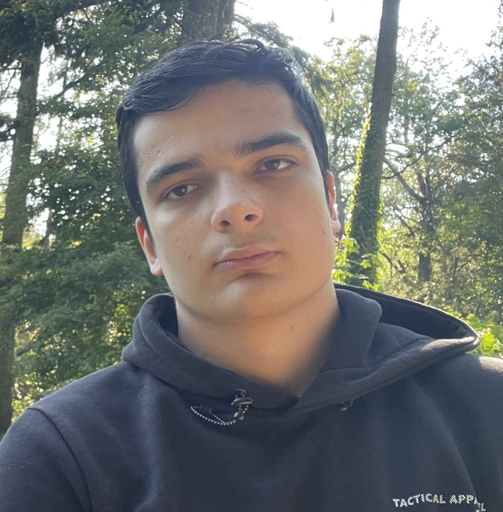

Over Mij
Hallo! Mijn naam is Islam Sadaev, een gemotiveerde student met een passie voor webontwikkeling. Ik houd ervan om creatief bezig te zijn en nieuwe technologieën te verkennen.
Met een achtergrond in design en sterke vaardigheden in HTML en CSS, ben ik altijd op zoek naar manieren om gebruikerservaringen te verbeteren. Mijn doel is om mijn kennis verder uit te breiden en impactvolle projecten te creëren. Bekijk mijn Curriculum Vitae voor meer details over mijn opleidingen en vaardigheden.
Buiten mijn studie ben ik actief in kickboksen en schaken. Beide hobby's helpen me niet alleen om fit te blijven, maar ook om mijn strategisch denken te verbeteren. Meer over mijn hobby's en interesses kun je vinden op mijn Hobby's & Interesse pagina.
Ik geloof in de kracht van leren en persoonlijke groei, en ben altijd op zoek naar nieuwe kansen om mezelf uit te dagen en mijn vaardigheden te ontwikkelen. Kijk ook naar mijn Ervaring pagina om te zien wat ik tot nu toe heb bereikt.